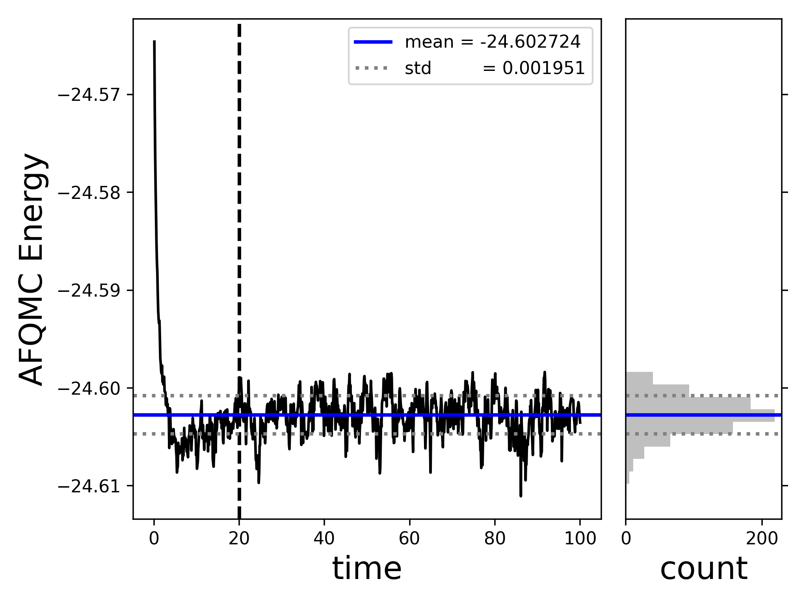

Download this notebook (.ipynb + data files)
2. B atom – Semistochastic heatbath CI (SHCI) trial wavefunction#
In this example, we will compute the ground state energy of the Boron (B) atom.
This is an open-shell atom with a single p-electron.
We used PySCF and afqmctools to generate a Hamiltonian and save it the SAFIRE HDF5 format (sample script at the end of this example); however, a FCIDUMP can be used instead.
If you already have a FCIDUMP, you can skip using the afqmc_to_fcidump tool,
and instead, after running SHCI, you can use the fcidump_to_afqmc tool to generate a Hamiltonian for SAFIRE.
References:
https://pubs.acs.org/doi/10.1021/acs.jctc.2c00802
2.1. Example#
Begin by generating a SAFIRE Hamiltonian HDF5 file. See the sample script below. afqmctools provides a command line tool to convert from the SAFIRE HDF5 Hamiltonian file to a FCIDUMP which can be read by many quantum chemistry codes.
afqmc_to_fcidump -i afqmc.h5 -o FCIDUMP
We will use SHCI as implemented in DICE for this example;
the next step is generating an input file. For more information on how to use DICE, refer to its official documentation.
For the sake of this example, we will simply provide an input file.
Copy and past the text below into a file within the example directory to use as an input file.
We called this input file dice_input.dat.
#system - B atom
nocc 5
0 2 4 1 3
end
orbitals ./FCIDUMP
nroots 6
#variational
schedule
1 0.01
2 0.005
3 0.001
5 0.0005
10 0.0001
end
davidsonTol 5e-05
dE 1e-08
maxiter 20
#pt
nPTiter 500
epsilon2 1e-08
epsilon2Large 1000
targetError 0.00001
sampleN 300
#misc
printBestDeterminants 2000 # this is for the output file in ASCII
Now run Dice and be sure to save the text output to a file! From the example directory,
/path/to/Dice/bin/Dice dice_input.dat &> output.dat
This will generate a fairly long output (due to printing 2000 Slater determinants per state in plain text), but you should see that the variational stage converges to something similar to:
Variational calculation result
Root Energy Time(s)
0 -24.6065937243 37.01
1 -24.3848958840 37.01
2 -24.2533868304 37.01
3 -24.2463668768 37.01
4 -24.1939152544 37.01
5 -24.1830384836 37.01
The SHCI energy is given by the variational energy with perturbative corrections. In this case, for the ground state, we got,
**************************************************************
PERTURBATION THEORY STEP
**************************************************************
Performing (semi)stochastic PT for state: 0
Deterministic PT calculation converged
PTEnergy: -24.6065937243
Time(s): 38.52
2/ Stochastic calculation with epsilon2=1e-08
Iter EPTcurrent State EPTavg Error Time(s)
1 -24.6066332993 0 -24.6066332993 -- 38.72
2 -24.6066530540 0 -24.6066431767 -- 38.91
3 -24.6066238689 0 -24.6066367408 -- 39.13
4 -24.6066484462 0 -24.6066396671 -- 39.31
5 -24.6066455360 0 -24.6066408409 5.36e-06 39.50
Semistochastic PT calculation converged
PTEnergy: -24.6066408409 +/- 5.36e-06
Time(s): 39.50
Finally, afqmctools provides a command line tool to convert from the wavefunction printed in the Dice raw text output to the SAFIRE HDF5 wavefunction format.
From the example directory, run
$ dice_to_hdf5 -o shci_wfn.h5 -i output.dat -n 100 -v
Number of electrons: up:2, down:3
PHMSD trial wavfunction -> using uhf-like walkers
The -o option sets the output HDF5 file name,
-i sets the “input” to dice_to_hdf5 (this will be an output from Dice!),
-n sets the number of Slater determinants to save (currently a required argument!),
and -v turns on verbose output.
Now, we need to write an SAFIRE input file. You can set this up as you choose, here is a sample input file for this case.
{
"afqmc": {
"project": {
"id": "qmc",
"series": 0
},
"execute": {
"walker_set": {
"walker_type": "COLLINEAR"
},
"hamiltonian": {
"filename": "afqmc.h5"
},
"wavefunction": {
"filename": "shci_wfn.h5"
},
"timestep": 0.01,
"steps": 10000,
"n_walkers_per_mpi_task": 20,
"measure_interval_multiplier": 1,
"population_control_interval": 10,
"walker_ortho_interval": 10,
"seed": 42
}
}
}
Finally, we can run AFQMC using SAFIRE by running
$ mpirun -np 64 /path/to/SAFIRE/build/safire afqmc.json
When that has finished, we can use afqmctools to analyze the result,
$ scalar_stats qmc.s000.scalar.dat -s time -t -e 20.0 -t --savefig energy_vs_beta.png
====== [analyze_scalar_data Settings] ======
[+] fname = qmc.s000.scalar.dat
[+] mark_header = #
[+] series_column = time
[+] nequil = 20.0
[+] estimate_equil = False
[+] column = LocalEnergy
[+] reblock = 1
[+] ndiscard = None
[+] list = False
[+] trace = True
[+] append = None
[+] dump = False
[+] dump_fname = trace.dat
[+] verbose = True
[+] autocorr = None
[+] savefig = energy_vs_beta.png
[+] dump_avail_columns = False
AFQMC Energy -24.602724 +/- 0.000208 9.08 20.0/100.0
This will also generate the following plot within the energy_vs_beta.png. The plot will also open in a new interactive window if run locally.

2.2. Sample Script for Generating the SAFIRE Hamiltonian File#
Simply run this python script to generate a SAFIRE Hamiltonian file for the B atom.
# sample script to generate a SAFIRE HDF5 Hamiltonian
# using afqmctools and PySCF.
from pyscf import gto, scf
from afqmctools.utils.pyscf_utils import load_from_pyscf_chk_mol
from afqmctools.hamiltonian.mol import write_hamil_mol
### Step 1. Run PySCF to generate a basis
mol = gto.M(
basis = "augccpvtz", # as in https://pubs.acs.org/doi/10.1021/acs.jctc.2c00802
atom = "B 0. 0. 0.",
spin = 1 # Nup - Ndown
)
atom_chkfile = "B.chk"
mf = scf.ROHF(mol).newton()
mf.chkfile = atom_chkfile
mf.kernel()
# perform stability analysis - see PySCF example:
# https://github.com/pyscf/pyscf.github.io/blob/master/examples/scf/17-stability.py
mo1 = mf.stability()[0]
dm1 = mf.make_rdm1(mo1, mf.mo_occ)
mf = mf.run(dm1)
mf.stability()
mf.kernel()
### Step 2. use afqmctools to generate and save the Hamiltonian.
# load data from PySCF checkpoint file
basis_scf_data = load_from_pyscf_chk_mol(
chkfile = atom_chkfile
)
# write Hamiltonian
write_hamil_mol(
basis_scf_data,
hamil_file = "afqmc.h5",
chol_cut = 1e-6,
verbose=True
)